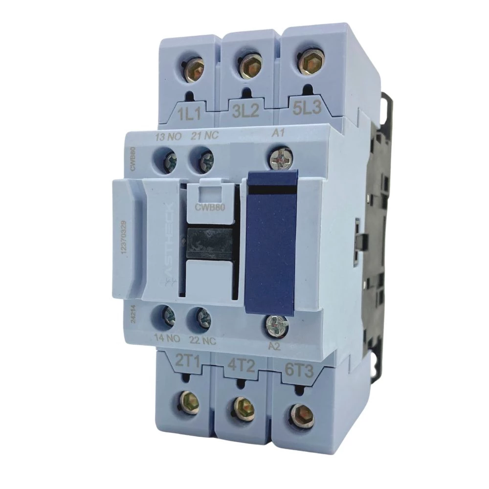

Dispositivo eletromecânico para controle de circuitos elétricos de potência
O contator é um dispositivo eletromecânico utilizado para ligar e desligar circuitos elétricos de potência à distância. Ele é muito empregado no acionamento de motores, sistemas de iluminação e equipamentos industriais.
Componente responsável por gerar o campo magnético quando energizado
Contatos de potência que controlam a corrente da carga
Contatos de comando e sinalização do sistema
Peça que se move com o campo magnético

Os contatores permitem controle remoto de equipamentos de alta potência, oferecem acionamento rápido e confiável, apresentam longa vida útil e são essenciais para automação industrial moderna.